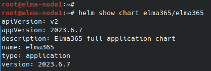

During the operation of BRIX Enterprise, there may be a need to change or reconfigure a particular component of the application. For example, it might be necessary to modify service settings (change email server settings), connection parameters to the application, configure additional functionalities, etc. It is done in two steps:
Step 1: Make changes to the configuration file values-elma365.yaml
Changes are made to the existing configuration file values-elma365.yaml, which was obtained and filled out during the installation of BRIX Enterprise.
Начало внимание
Before making changes to the values-elma365.yaml file, it is recommended to create a backup copy of it. Incorrect changes to the parameters in this file can lead to the BRIX Enterprise application becoming inoperable.
Конец внимание
- To load the latest file with parameters, run:
helm repo update
helm show values elma365/elma365 > values-elma365-new.yaml
- To read the file with parameters that was used in BRIX installation, run:
helm [-n namespace] list
helm [-n namespace] get values elma365 > values-elma365-installed.yaml
Description of parameters found in the configuration file values-elma365.yaml
Name |
Description |
|
The domain (FQDN) or IP address through which the system will be accessible. When installing the system with a specified domain name, it is necessary to add the corresponding AAA record to the DNS server: Default value: |
|
Enabling host in ingress (value is taken from Important: If TLS support is not enabled, it's recommended to enable it. It is also planned to use the domain (FQDN) to access the S3 minio storage, installed in the Kubernetes cluster using charts Default value: Available options: |
|
Annotations for ingress.
|
|
Override the Kubernetes version. |
|
Enable support for HAProxy Ingress to work on the OpenShift platform. Default value: Available options: |
Начало внимание Starting from version 2023.10 this parameter is no longer used. Конец внимание |
Path to file Default value: |
|
Enable check of database connection when installing or updating the BRIX application. Default value: Available options: |
|
Enable TLS support (Enable HTTPS). Default value: Available options: |
|
Name of the secret with certificates for HTTPS operation. Default value: |
|
Enabling the root CA certificate for HTTPS operation with a self-signed certificate. Important: before enabling, it's necessary to install the add-on components. Read more in Enable network encryption (TLS) in BRIX Enterprise. Default value: Available options: |
|
Name of the ConfigMap with the root CA certificate for HTTPS operation with a self-signed certificate. Default value: |
|
Enables monitoring support on the BRIX application side. Important: Before enabling service monitoring, it's necessary to install add-on components. For more details, refer to the article Enable monitoring in BRIX Enterprise. Default value: Available options: |
|
Enables the installation of ServiceMonitor in the Kubernetes cluster for BRIX application services. Default value: Available options: |
|
Enables the provision of a significantly larger number of metrics in Prometheus format by the BRIX application services. It's disabled by default to prevent disruption of the entire monitoring system due to an excessive number of metrics. Default value: Available options: |
|
Configures the supplied monitoring tools for the target platform. Default value: Available options: |
|
Enables the installation of Dashboards (ConfigMap) in the Kubernetes cluster for BRIX application services. Default value: Available options: |
|
Enables the installation of PrometheusRule (CRD) in the Kubernetes cluster for BRIX application services. Default value: Available options: |
|
Enables the export of Default value: Available options: |
|
Enables support for portable services. |
|
Specify a data storage system. Default value: |
|
Names of the namespace where portable services will be placed. |
|
Enables support for auto-scaling on the BRIX application side. Important: Before enabling service scaling, it is necessary to install add-on components. Read more in the article Enable service autoscaling in BRIX Enterprise. Default value: Available options: |
|
Choosing the auto-scaling method. Default value: Available options: Where:
|
|
Configures the minimum number of replicas. Default value: 1. |
|
Configures the maximum number of replicas. Default value: 9. |
GLOBAL — Connection parameters to the private container image repository |
|
|
Connection string for private registry. Format: Where:
Default value: Read more about the required image storage configuration in Prepare infrastructure. |
|
Name of the secret with access rights to the private registry (must be created manually, encrypted in Base64). Default value: |
|
Maximum number of connections to the main PostgreSQL node in the pool of unused connections. Default value: |
|
Maximum number of open connections to the main PostgreSQL node from the pool. Default value: |
|
Maximum lifespan of a connection to the main PostgreSQL node from the pool. Default value: |
|
Maximum number of connections to PostgreSQL copies in the pool of unused connections. Default value: |
|
Maximum number of open connections to PostgreSQL copies from the pool. Default value: |
|
Maximum lifespan of a connection to PostgreSQL copies from the pool. Default value: |
|
Maximum response size. Default value: |
|
Maximum delay between attempts to establish a GRPC connection. Default value: |
|
Number of seconds allocated for the entire Job to execute. Default value: |
|
Number of migration attempts during BRIX update. Default value: |
|
Enables platform debugging mode. Default value: Available options: |
|
The email address is specified. The email address will serve as the login for the main administrator. Important: Used when creating a company at the time of BRIX installation, changing Default value: |
|
Password for the main administrator login. Important: Used when creating a company at the time of BRIX installation. Default value: |
|
Company interface language. Default value: Available options: |
|
Installed platform language. Default value: Available options: |
|
Connection string to PostgreSQL for write and read operations. Format: Where:
For more details on the necessary PostgreSQL configuration, read the article Prepare infrastructure. |
|
Enable the use of the external secrets to connect to the database ( Default value: Available options: |
|
Secret name with connection to PostgreSQL for read operations (must be manually created, encrypted in Base64). It should contain the key Important: enabling |
|
Connection string to PostgreSQL for read operations. Format: Where:
For more details on the necessary PostgreSQL configuration, read the article Prepare infrastructure. |
|
Secret name with connection to PostgreSQL for read operations (must be manually created, encrypted in Base64). It should contain the key Important: enabling |
|
Connection string to MongoDB. Format: Where:
For more details on the necessary MongoDB configuration, read the article Prepare infrastructure. |
|
Secret name with connection to MongoDB (must be manually created, encrypted in Base64). It should contain the key Important: enabling |
|
Connection string to MongoDB for the authorization server. Format: Where:
For more details on the necessary MongoDB configuration, read the article Prepare infrastructure. |
|
Secret name with connection to MongoDB for the authorization server (must be manually created, encrypted in Base64). It should contain the key Important: enabling |
|
Redis connection string. Format: Where:
For more details on the necessary Redis configuration, read the article Prepare infrastructure. |
|
Secret name with connection to Redis (must be manually created, encrypted in Base64). It should contain the key Important: enabling |
|
RabbitMQ connection string. Format: Where:
For more details on the necessary RabbitMQ configuration, read the article Prepare infrastructure. |
|
Secret name with connection to RabbitMQ (must be manually created, encrypted in Base64). It should contain the key Important: enabling |
|
S3 file upload method. Default value: |
|
S3 server user login. |
|
S3 server user password. |
|
S3 bucket name. Default value: |
|
S3 connection string. Format: Where:
If the port is not specified:
|
|
S3 server location region. |
|
Usage of TLS encryption by the S3 server. Default value: Available options: |
|
Enabling the Virtual-hosted style mode for S3. In this mode, the bucket name is part of the url, for example: If the parameter is disabled, the address model used is Path‑style. Default value: Available options: |
|
S3 server address for backup by the script Format:
|
|
Secret name with connection to S3 storage (must be manually created, encrypted in Base64). Should contain keys Important: enabling
Default value: |
|
IP or URL address for connecting to the SMTP server. Default value: |
|
Port for connecting to the SMTP server. Default value: |
|
Email address (mailbox name) from which messages will be sent. Default value: |
|
SMTP server user login. Default value: |
|
SMTP server user password. Default value: |
|
Use of TLS encryption by the SMTP server. Default value: Available options: |
|
Sets a limit in MB for memory used by one execution fork inside one replica of the worker service. If the parameter value is not set or is equal to 0, the worker service's operation remains unchanged. |
|
Is set after the This is useful if a lot of custom variables are used for generating document templates. Default value is 5. |
|
To enable a feature flag, enter its name in a new line. In front of the name, add a dash and a space. All the enabled feature flags are provided as a list. |
Uncomment and edit the parameters in the values-elma365.yaml configuration file and save the changes.
Step 2: Apply new parameters for BRIX Enterprise
You can update parameters for BRIX Enterprise in two ways: online and offline.
Update parameters online
- Determine the chart version with which the BRIX application was installed or updated:
helm list [-n namespace]
Command execution example:

After the command execution, you see the chart version information in the version string. Save this value for the next step.
- Update the BRIX parameters using the
values-elma365.yamlconfiguration file. To do this, execute the following command specifying the installed chart version for the--versionflag instead of<elma365-chart-version>:
helm upgrade --install elma365 elma365/elma365 -f values-elma365.yaml --version <elma365-chart-version> --timeout=30m --wait [-n namespace]
Update parameters offline
Navigate to the directory with the chart with which the BRIX application was installed or updated and execute the command:
helm upgrade --install elma365 ./elma365 -f values-elma365.yaml --timeout=30m --wait [-n namespace]
It takes about 10-30 minutes to update the parameters. Wait for it to complete.